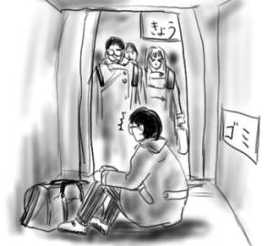
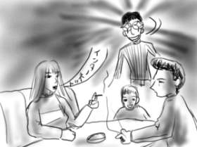
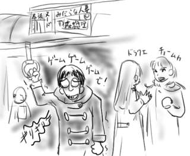
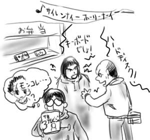

岩槻を出発し、名古屋で滞在(not 大罪)してから徹夜明けの身体を引きずってうどん国へ帰省してまいりました。のぞみのデッキ立ち乗りチケットで500系だったのでかっこいいデッキを一人占めし、ドアからびゅんびゅんと流れる風景(と並走する忍者←妄想)を眺めて盛り上がっていたのですが、何しろ徹夜明けだったのでいつしか夢の世界へ。気が着くと京都駅で開いたドアの向こうで、並んだ乗客が迷惑そうに僕を見下ろしてました。生まれてごめんなさい。

うどんの国では、人形狂いのダメ人間みさきなな子など、高校時代のSF研(マンガを読んだりカードゲームをしたりする漢らしいクラブ活動)のメンバーが大集合。主にUMAやUFO、超能力などについてインチキを暴く番組に集中していたら世紀が変わってました。これじゃダメだということでガストへ出発！うどんの国では、ファミレスとかコンビニが激レアで大人気なのです。ガストではヤンママヤンパパが子供を連れて大集合してました。子供が夜更かししすぎです。もちろんウルフカットです。もちろん家族はトレーナー着用です。隣のヤンママヤンパパが「インターネットやりたーい！パソコン買おうよ、安いのでいいからさぁ」とか言い出すので、僕とみさきなな子の目がハンターのソレになったことを報告しておきます。

電車に乗っていると、目の前の女子大生２人連れが恋愛話にムチューの様子です。
「なんか今の彼氏が〜元彼女と遊びに行ったりしてるみたいなの〜」
「え〜マジで。そういうのってワタシ、絶対ヤダ〜」
「それで聞いてよ！チョームカつくの！今、彼氏ドラクエやってんの。そんでヒロインの女のキャラいるじゃん？あれに元彼女の名前つけてんの！」
「え〜なにそれ〜！」
「そんで、どーでもいい女のキャラがいるじゃん、そっちがワタシの名前なの！」
「えー！データ消させてプレイやりなおさせなよー！」
という感じだったのですが、いいですか。ドラクエのキャラに気になるあの娘の名前をつけてはにゃーん、というのはこちら側の人間の特権だったはずです！領域侵犯だ！(帽子を地面に叩き付けながら)

ドラクエを(というより、むしろゲームを)恋愛話で語れるのは若い世代の特権なのでしょうか？ドラクエ世代ってやつ？
どうしようもない焦燥感で胸を焦がします。ぼくだってぼくだって。ゲームで恋愛話を！(志がすでに歪んでいます)
コンパってパソコンパーツの略？ストレージ！(挨拶)
僕らにとってコンパはパソコンパーツのことであり、このような略語を用いることによって一般の方々とも会話がスムーズに進むのです！
「昨日コンパだったんだけどさ、結構お金かかっちゃったよ。でも、結構はやくなったよ。」
…やっぱり無理みたいでした！
ぼくの大好きな世紀末がもう終わっちゃうよ！どうしよう！これからどうやって生きていけば！
というわけで心機一転、一徹ばりに世紀末を盛り上げていきたいっすね。ようやく復活です。ピーピングしてくださっている方々には本当に申しわけありませんでした。
でもって更新をサボっている間にPSIONのRevoを大購入！
でも僕はヘボちんなので、こいつをWindowsCEと思い込んで使用する親父のロールプレイで使っていこうと思います。ゼロハリデザインのお洒落なボディなんじゃろ？(シグマリオンです)
どちらにせよ、Palmは電車の中で！Revoはお洒落なカフェで！(合い言葉)
日本発売には時間がかかるだろうと踏んでいたRevo plusがあっさりと販売開始され、一瞬の春でした(オチ)。
というわけで、どこでもテキストが打ち込めるようになったのはいいのですが、逆に書いたものを吸い上げるのが面倒になってしまい、逆効果でした。一瞬の春でした。
コンビニでライフガードを買ってたら、後ろで「キーボードが壊れたんでしょ！」「いや、ハードディスクだよ！」と喧嘩している父娘がいたよ。どういう症状ですか、それ。
それはともかくとして、「ザ☆テレビジョンスナック」が売りだされ、挙げ句にそこでフィーチャーされているのが「モンコレナイトGB」というのはどういったことか(ヒント：角川書店)。日本は思った以上に世も末らしいです。

そんな感じで世紀末はチキンを食いちぎれ！
一応、年末年始は毎日更新します。